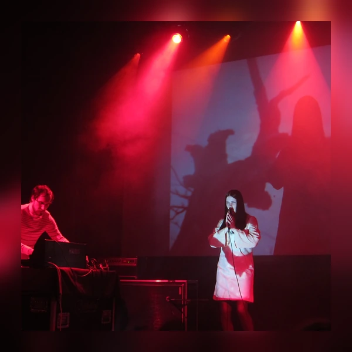
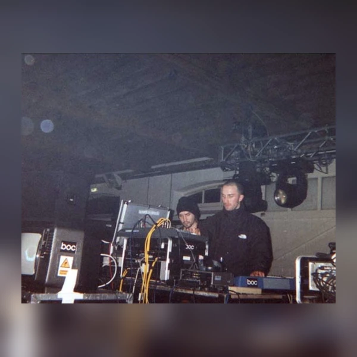
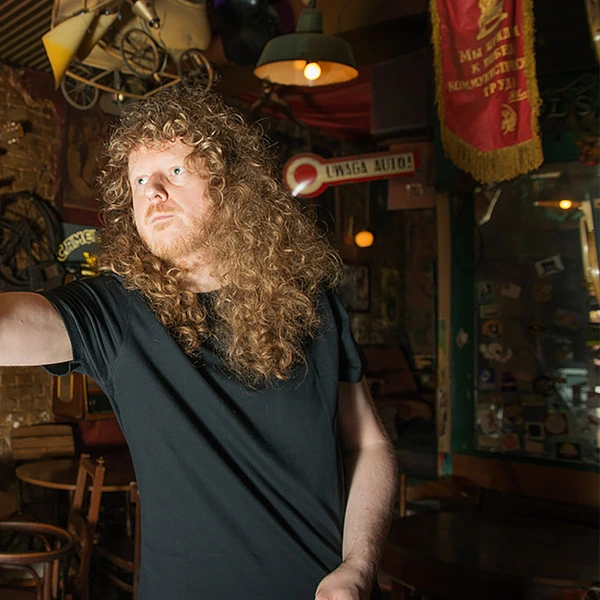
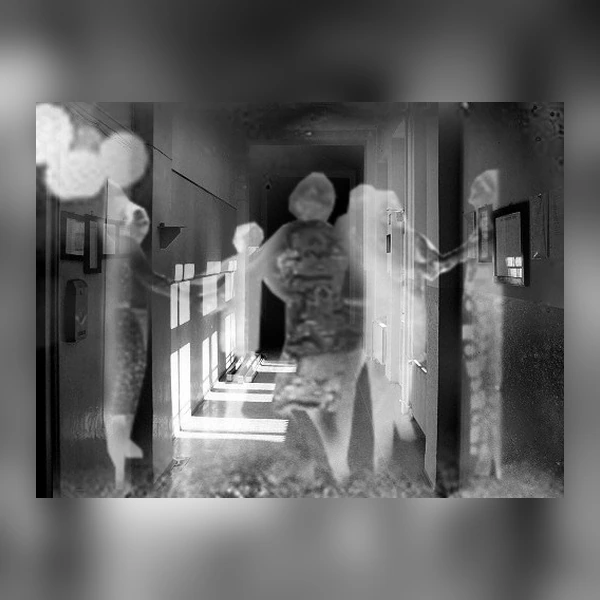
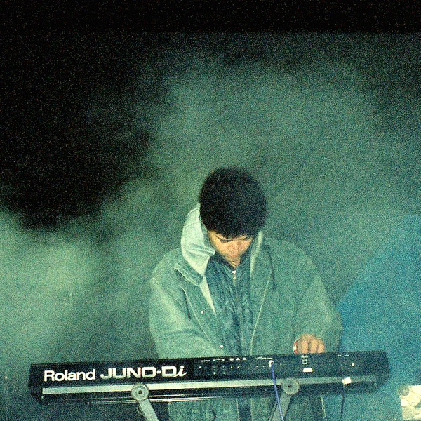
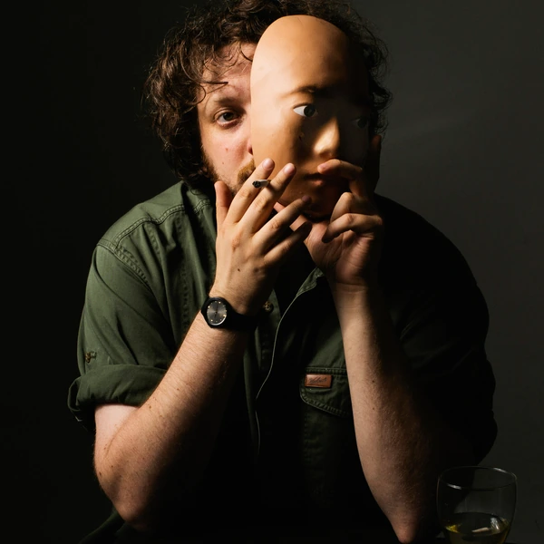
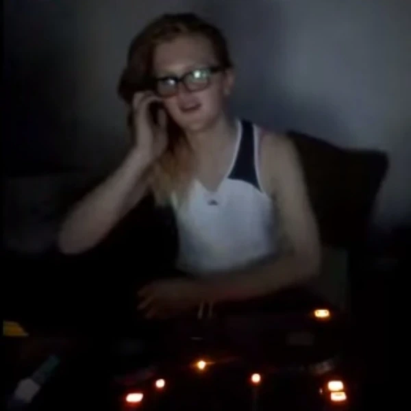

Hauntology is a loose term for music that uses the sounds of the past to explore how people remember it. Much of it is electronic, although the approach is not limited to one style or even to electronic instruments. A recording might sound like a forgotten television broadcast, or like something made decades ago that has only just been discovered. That impression is usually deliberate. Producers use old recording techniques, familiar musical textures and the imperfections of ageing media to make the past feel strangely close. There is more going on here than straightforward nostalgia. Hauntology is often concerned with the gap between what people once expected the future to look like and what actually happened. That makes it a particularly unusual musical category, since the ideas behind a recording can be as important as its rhythm or melody. Some listeners hear a distinct style in all this. Others hear a useful description for several different kinds of experimental music. Both interpretations have a point.
Hauntology began as a philosophical term in the early 1990s, long before it became a musical label. It combines haunting with ontology, the branch of philosophy concerned with existence. The original idea was that the present is never entirely free of things that are absent, unfinished or inherited from the past. Music critics borrowed the word in the 2000s to describe recordings that seemed preoccupied with such lingering traces. It proved useful for electronic music that recalled earlier generations of broadcasting and imagined futures that never quite arrived. The name can sound as though it refers to ghost stories, and sometimes the music does borrow their atmosphere, but it is not simply another word for spooky music. What is supposedly haunting the listener might be an obsolete technology or an abandoned idea of progress. The term has never had a strict musical definition, which gives critics plenty to argue about and producers even more room to work.
The musical practices associated with Hauntology existed before anyone thought to group them under that name. Experiments with tape loops, found sounds and electronic composition had been developing throughout the second half of the 20th century. Public broadcasting and educational television also produced distinctive electronic music at a time when new technology was often presented as a glimpse of the future. Decades later, those once futuristic sounds had become unmistakably old-fashioned. During the late 1990s and 2000s, a loose group of experimental producers began drawing on that history, sometimes using samples and sometimes recreating its recording methods. The result was not a revival in the usual sense. The music often made familiar material sound incomplete or unsettling rather than simply celebrating it. Writers began connecting these recordings with wider concerns about cultural nostalgia and the apparent disappearance of convincing ideas about the future. Online communities helped spread the label, while increasingly accessible digital archives supplied an enormous amount of material to revisit. Not everyone involved accepted the classification, and the music never became a unified scene. It has remained a flexible way of discussing how old media and present-day production can affect one another.
Hauntology tends to draw attention to the recording itself, not just the notes being played. Tape hiss, uneven pitch and the limited frequency range of older media can all become deliberate parts of the sound. A producer might make a new synthesiser melody resemble an old educational programme, then interrupt it with a fragment of speech or a sudden change in audio quality. Repetition is common, but it often feels less like a dance groove and more like a memory returning in pieces. Some recordings use recognisable beats, while others unfold slowly with barely any percussion. The music can overlap with Ambient, experimental electronic music and sample-based styles without fully belonging to any one of them. Its most recognisable quality is the way it suggests a source that is difficult to place. You might feel that you have heard something before without being able to say where. Of course, making a recording sound old takes rather more deliberate work than simply waiting for it to age.







Hauntology raises an awkward question about modern culture. Why does so much supposedly new music seem fascinated by the past? The answer is not simply that older technology sounds interesting. In some of the writing surrounding the genre, the return to earlier electronic sounds reflects disappointment with the future those sounds once promised. Postwar broadcasting often presented technological progress as something that could improve ordinary life through shared public institutions. Looking back at that optimism can make present-day political and economic choices seem less inevitable than they are sometimes presented. There is also a practical side to the music. Cheap recording tools and online archives have made it possible to reuse fragments of cultural history that would once have remained difficult to find. That can encourage experimentation, but it also raises questions about who controls archives and whose memories get preserved. Hauntology is a fairly specialised area of music, so its influence is easier to see in production techniques and cultural criticism than in mass political movements. Its strongest contribution may be the suggestion that nostalgia does not always have to mean wanting the past back. Sometimes it means wondering why the future turned out differently.